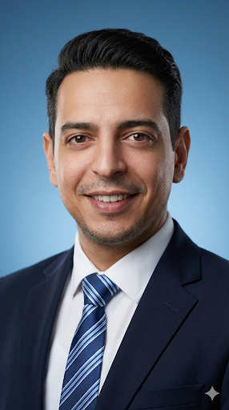

محمود الأناضولي
محمود مرسي عباس محمد سليمان أبو الدهب الأناضولي — من جعافرة قنا، مقيم بالقاهرة
مهندس استشاري في الهندسة الكيميائية البيئية | خبير إدارة الأزمات الدولية والتفاوض (عقيد مهندس متقاعد)
نبذة مهنية
مهندس استشاري وخبير في الشؤون البيئية وإدارة الأزمات الدولية والتفاوض، بخلفية هندسية وقيادية متميزة. يجمع بين الخبرة الميدانية والأكاديمية في مجال الهندسة الكيميائية البيئية ومعالجة المياه.
المؤهلات العلمية
- ماجستير الهندسة الكيميائية البيئية — كلية الدراسات العليا والبحوث البيئية، جامعة عين شمس (2022).
- بكالوريوس الهندسة — الكلية الفنية العسكرية.
- دبلومات متخصصة في إدارة الأزمات والتفاوض.